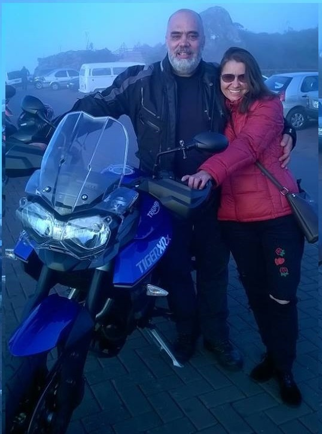

Frederico Tomazetti
Tudo começou na infância, com a bicicleta e depois com uma mobilete Garelli com motor 50cc e pedais, onde toda a meninada dava uma "voltinha no quarteirão". Adolescente ainda, lá pelos anos de 1985, pilotava sem capacete e sem o conscentimento de seu tio Antônio, o proprietário da moto, uma Honda ML 125 com freio a disco! Uma novidade no Brasil.
Depois de tirar habilitação rodou muito tempo com outra moto 125 da Honda, uma Turuna que usava para trabalhar no engenho de arroz do seu tio Vilmar, onde aprendeu a programar computadores.
Comprou sua primeira moto mesmo já em Minas Gerais, no ano 2000, uma Honda XLX 250 R ano 1989 com partida a pedal, uma moto que mais parecia um trator. Foi a realização de um sonho de criança, pois via muito a famosa "XLão" na década de 80, quando ainda não tinha condições de ter sua própria moto. Com ela rodou muito tempo até comprar sua primeira moto zero KM, uma Honda Twister 250 ano 2003. Que moto gostosa de acelerar!
Em 2009 comprou sua primeira Yamaha, uma Lander 250 vermelha. Com esta moto pegou estrada, foi a cachoeiras, passou por chuva, vento, frio, calor e todo tipo de adversidade e também alegrias que duas rodas proporcionam.
Em 2014 uma outra Yamaha, agora uma Fazer 250 branca, também zero kilometro. Com a fazer vieram muitas viagens. Cidades como Ubá e Juiz de Fora em MG, Rio de Janeiro/RJ e mais algumas dezenas de pequenas cidades no entorno da capital mineira. A Fazer rodou 65 mil km entre cidade e estradas, sempre com a esposa na garupa. Foram grandes momentos, muitos passeios e muitas fotos no álbum da mototerapia.
Veio então 2018 e um grande salto aconteceu. Fred, juntamente com sua esposa, consegue comprar a sua Triumph Tiger 800 XRx, azul, linda, potente, confortável, nervosa, imponente, segura e forte! Quem pensou que já viajou muito de moto é porque ainda não tem uma Tiger! Com ela, em pouco tempo visitaram outras dezenas de lugares, viajaram de Belo Horizonte até o Rio Grande do Sul, realizando um antigo desejo de ir até sua terra natal de moto. Passaram pelo Rastro da Serpente em SP, Serra do Rio do Rastro em SC, pelo litoral catarinense, pela lagoa dos patos e atravessaram o Rio grande do sul de Leste a Oeste, de Norte a Sul!
Em Minas Gerais já visitaram São Thomé das Letras, Tiradentes, São João Del Rey, Catas Altas, Barão de cocais, Bom despacho, Divinópolis, Serra do cipó e mais um tanto de outros lugarejos onde o casal geralmente vai em grupo. Com esta moto é dificil ficar em casa no final de semana!
Mesmo rodando de moto há uns 30 anos os sonhos não acabam, na verdade eles sempre se renovam. Ir a lugares mais distantes é um desejo que está sempre latente no coração de um motociclista. Visitar Brasilia, Mato Grosso, Nordeste do Brasil e um grande sonho: CHILE! Cordilheira dos Andes, neve, bom vinho e paisagens encatandoras.
Mas a moto não é só passeio. Ela é um estilo de vida! Fred usa sua moto para tudo, ele não tem um carro para os dias de chuva ou frio. Se chover, vai molhar, se esfriar, coloca agasalho. Foi uma escolha, uma ótima escolha. O motociclismo trouxe novos e aproximou antigos amigos. É praticando mototerapia que ele recarrega as energias para enfrentar os desafios de sua outra paixão: A programação de computadores!

 |
 |
|
 |
 |